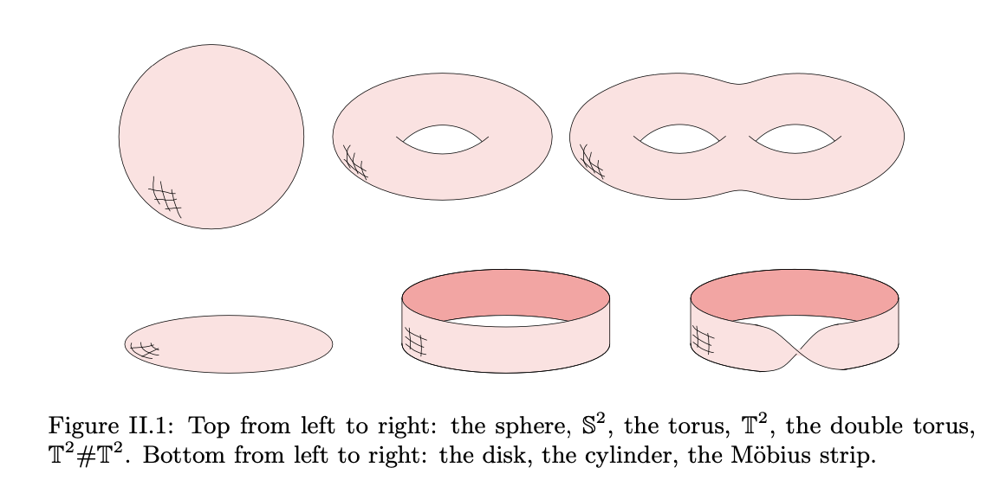
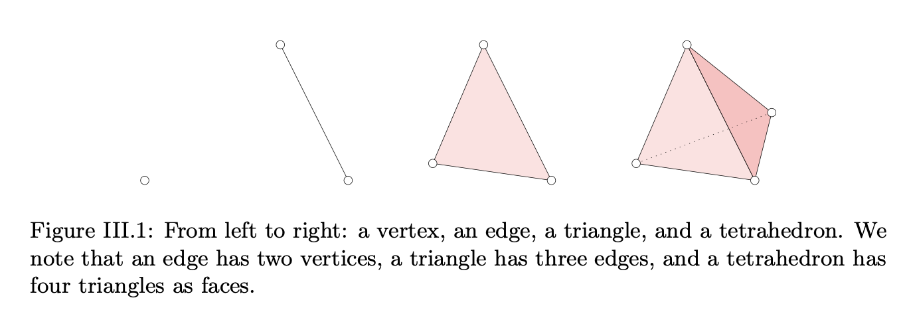
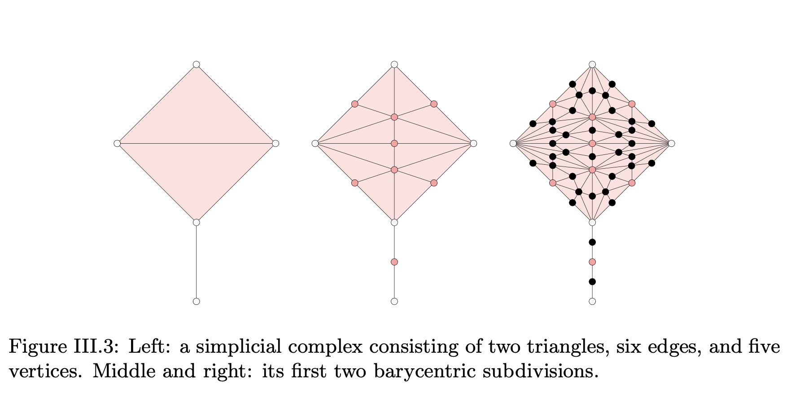
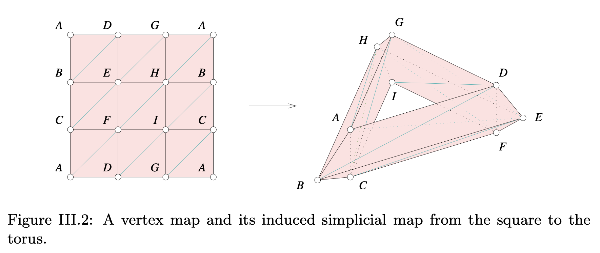

I am currently Data Science faculty at Mount St. Mary's University in Maryland.
I graduated from Montana State University in 2018 and was part of the Computational Geometry and Topology group.
Ideas, definitions, and figures are all taken from E&H Ch. 3 unless otherwise stated.
We care about simplicial complexes because they allow us to describe a complicated space in terms of simple components. Simple components allow for easier compute. A simplex is a very simple component.
This figure is from Ch. 2
A \(k\)-simplex is the convex hull of \(k\) + 1 affinely independent points.
Let \(U\) be a set \(u_0, ..., u_k\) affinely independent points. A point \[ x = \sum_i \lambda_i u_i \] is a convex combination if all \(\lambda_i\) sum to 1 and are greater than 0. The set of convex combinations is the convex hull.
A set of points is affinely independent points if the member \(u_i\) cannot be generated as an affine combination of the rest of the members \(u_j,\:j \neq i \). E&H gives this definition as an equivalence requirement: \[ \sum_i \lambda_i u_i = \sum_i \mu_i u_i \iff \forall i, \: \lambda_i = \mu_i \]
Any subset of \(U\) will also be affinely independent. A simplex is composed of smaller simplices.
The convex hull of \(U - u_i\) is a face of the convex hull of \(U\).
The boundary of a simplex is the union of all its faces.
My intuition: a simplicial complex is a bunch of simplices attached at their faces. E&H clarify that this produces a closure under taking faces and prevents improper intersections.
From E&H p. 75
A simplicial complex \(K\) is a finite collection of simplices such that \(\sigma \in K\) and \(\tau \leq \sigma\) implies \(\tau \in K\)
... this is the closure under taking faces ...
and \(\sigma, \sigma_0 \in K\) implies \(\sigma \cap \sigma_0\) is either empty or a face of both
... this forbids the improper intersections ...
Although motivated by affine transformations in Euclidean space, simplicial complexes can be studied productively as a finite collection of sets \(A\) where all subsets of its members are included in \(A\). So, if \(\alpha\) is a member of \(A\) and \(\beta\) is a subset of \(\alpha\), then \(\beta\) is also in \(A\). This encodes the inclusion of faces.
Any abstract simplicial complex of dimension \(d\) has a realization in \(\mathbb{R}^{2d+1}\)
From E&H p. 79
If \(g: |K| \rightarrow |L|\) is continous, then there is a sufficiently large integer \(n\) such that \(g\) has a simplicial approximation \(f:Sd^nK \rightarrow L\)
Intuition: if there is a continous map between the elements in \(|K|\) and \(|L|\), we can subdivide \(K\) into small enough simplices to map simplices in \(L\).
 Discussion question: What is an easy way to define a mapping between two simplicial complexes?